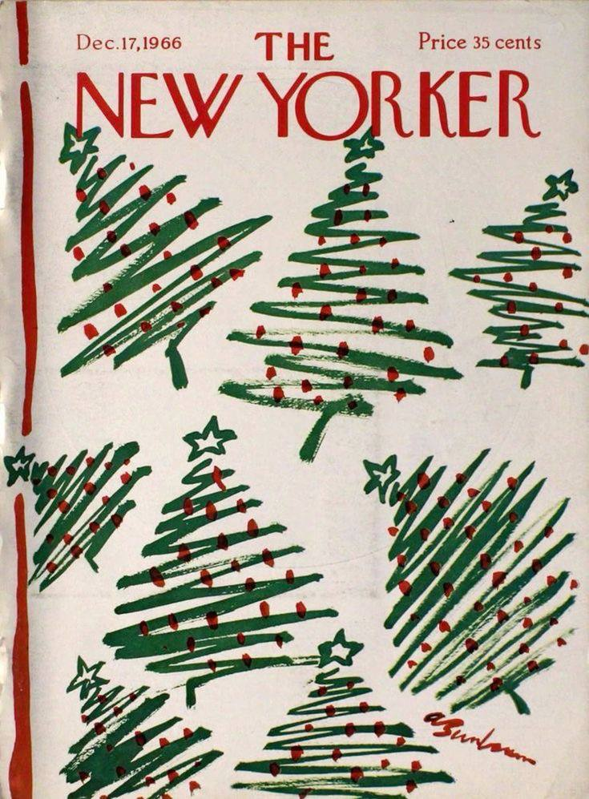

Урок 6.5: Позиционирование изображения профиля
Теория
Свойство object-fit
Свойство object-fit определяет, как изображение должно заполнять свой контейнер при заданных размерах:
img {
width: 150px;
height: 150px;
object-fit: cover | contain | fill | scale-down;
}

object-fit: cover
object-fit: contain
object-fit: fill
object-fit: scale-down
Отрицательные отступы
Отрицательные отступы позволяют сдвигать элементы за пределы их обычного положения:
.profile-image {
margin-top: -50px; /* Сдвиг вверх */
margin-bottom: 20px;
}Важно помнить:
- Отрицательные отступы могут создавать наложение элементов
- Требуется учитывать z-index при наложении
- Следует использовать осторожно для избежания конфликтов
Позиционирование изображения
Для размещения изображения профиля поверх header используем абсолютное позиционирование:
.card-header {
position: relative; /* Создаем контекст позиционирования */
}
.profile-image {
position: absolute;
bottom: -50px;
left: 50%;
transform: translateX(-50%);
}Практика
Задание: Позиционирование изображения профиля
Создайте карточку с изображением профиля, наложенным на header.
Требования:
- Используйте object-fit для правильного отображения изображения
- Примените абсолютное позиционирование
- Добавьте белую рамку вокруг изображения
- Сделайте изображение круглым
Подсказки:
- Используйте
position: relativeдля header - Примените
position: absoluteдля изображения - Задайте
border-radius: 50%для круглой формы - Используйте
object-fit: coverдля изображения